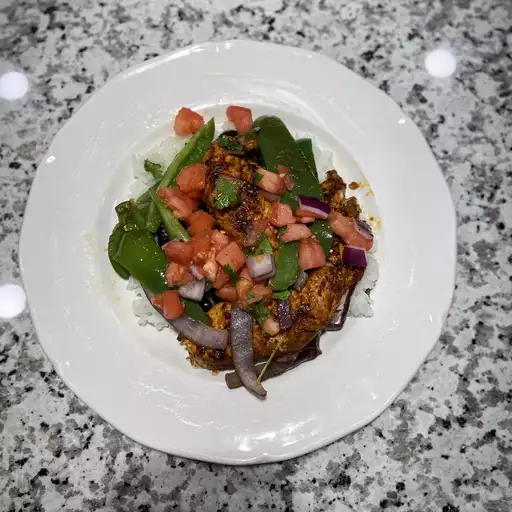

How to make Chipotle Chicken

This is the photo of super juicy burgers with crispy edges that you can make it at home!
- Prep Time: 10 mins
- Cook Time: 5 mins
- Additional Time: 18 hrs
- Servings: 8 people
- Total Time: 18 hrs 15 mins
Ingredients
- 1 ounc dried chipotle chile pepper
- 1 ounce dried ancho chile pepper
- 1/2 cup water
- 1/2 red onion, cut into small chunks
- 4 cloves garlic
- 2 teaspoons sea salt
- 1 teaspoon ground cumin
- 1 teaspoon freshly ground black pepper
- 2 tablespoons olive oil
- 2 1/2 pounds skinless, boneless chicken thighs
Steps
- Place chipotle and ancho chile peppers in a shallow bowl; pour in water. Cover the bowl and let sit at room temperature until peppers are softened, 10 to 12 hours. Drain water and remove seeds from peppers.
- Blend chile peppers, red onion, garlic, sea salt, cumin, oregano, and black pepper in a blender until a coarse paste forms; add olive oil and blend until marinade is smooth.
- Place chicken thighs between 2 sheets of heavy plastic on a solid, level surface. Firmly pound chicken with the smooth side of a meat mallet to a 1/2-inch thickness.
- Place chicken in a resealable plastic bag and add marinade. Turn chicken several times to coat. Seal bag and marinate in the refrigerator for at least 8 hours.
- Preheat an indoor grill with top and bottom plates for medium-high heat.
- Remove chicken from the bag and discard marinade.
- Place chicken on the preheated grill, close the lid, and cook until no longer pink in the center and the juices run clear, 5 to 7 minutes. An instant-read thermometer inserted into the center should read at least 165 degrees F (74 degrees C). Cut chicken into strips and serve warm.
Home